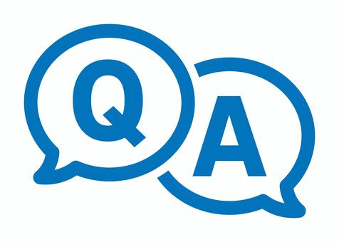

- トップ >
- 面接対策
面接対策
就活で避けては通れない面接。緊張してしまう人も多いですが、 事前準備をすることで自信を持って臨むことができます。 面接で大切なポイントを確認していきましょう。
①面接前の準備
面接で自分の魅力を伝えるためには、事前準備が大切です。 企業の事業内容や求める人物像を確認し、自分の経験や強みと 結びつけて話せるようにしておきましょう。 また、当日の流れや場所、持ち物なども事前に確認することで、 落ち着いて面接に臨むことができます。
②よく聞かれる質問への対策

面接では自己紹介、志望動機、自己PR、学生時代に力を入れたことなど、 多くの企業で聞かれる質問があります。 ただ答えを暗記するのではなく、自分の言葉で説明できるように 練習することが重要です。 過去の経験を振り返り、自分らしい回答を準備しておきましょう。
③話し方・伝え方のポイント
面接では内容だけでなく、伝え方も大切です。 相手の目を見て話す、明るい声で答える、結論から話すことを意識しましょう。 緊張してしまっても、ゆっくり落ち着いて話すことで、 自分の考えを相手に伝えやすくなります。
④身だしなみ・マナー
第一印象は面接の印象を大きく左右します。 スーツの着こなし、髪型、表情などを確認し、 清潔感のある身だしなみを心掛けましょう。 また、入退室の挨拶やお辞儀など基本的なマナーも練習しておくと安心です。
⑤模擬面接を活用する
本番の面接で緊張しないためには、実際に声に出して練習することが大切です。 大学のキャリアセンターや就活イベントなどの模擬面接を活用し、 第三者からアドバイスをもらうことで改善点を見つけることができます。 繰り返し練習して、自信を持って本番に挑みましょう。